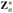
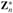
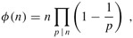

|
|
< Day Day Up > |
|
Informally, we can think of modular arithmetic as arithmetic as usual over the integers, except that if we are working modulo n, then every result x is replaced by the element of {0, 1, ..., n - 1} that is equivalent to x, modulo n (that is, x is replaced by x mod n). This informal model is sufficient if we stick to the operations of addition, subtraction, and multiplication. A more formal model for modular arithmetic, which we now give, is best described within the framework of group theory.
A group (S, ⊕) is a set S together with a binary operation ⊕ defined on S for which the following properties hold.
Closure: For all a, b ∈ S, we have a ⊕ b ∈ S.
Identity: There is an element e ∈ S, called the identity of the group, such that e ⊕ a = a ⊕ e = a for all a ∈ S.
Associativity: For all a, b, c ∈ S, we have (a ⊕ b) ⊕ c = a ⊕ (b ⊕ c).
Inverses: For each a ∈ S, there exists a unique element b ∈ S, called the inverse of a, such that a ⊕ b = b ⊕ a = e.
As an example, consider the familiar group (Z, +) of the integers Z under the operation of addition: 0 is the identity, and the inverse of a is -a. If a group (S, ⊕) satisfies the commutative law a ⊕ b = b ⊕ a for all a, b ∈ S, then it is an abelian group. If a group S, ⊕) satisfies |S| < ∞, then it is a finite group.
We can form two finite abelian groups by using addition and multiplication modulo n, where n is a positive integer. These groups are based on the equivalence classes of the integers modulo n, defined in Section 31.1.
To define a group on Zn, we need to have suitable binary operations, which we obtain by redefining the ordinary operations of addition and multiplication. It is easy to define addition and multiplication operations for Zn, because the equivalence class of two integers uniquely determines the equivalence class of their sum or product. That is, if a ≡ a′ (mod n) and b ≡ b′ (mod n), then
|
a + b |
≡ |
a′ + b′ |
(mod n) , |
|
ab |
≡ |
a′b′ |
(mod n) . |
Thus, we define addition and multiplication modulo n, denoted +n and ·n, as follows:
| (31.18) |
(Subtraction can be similarly defined on Zn by [a]n -n [b]n = [a-b]n, but division is more complicated, as we shall see.) These facts justify the common and convenient practice of using the least nonnegative element of each equivalence class as its representative when performing computations in Zn. Addition, subtraction, and multiplication are performed as usual on the representatives, but each result x is replaced by the representative of its class (that is, by x mod n).
Using this definition of addition modulo n, we define the additive group modulo n as (Zn, +n). This size of the additive group modulo n is |Zn| = n. Figure 31.2(a) gives the operation table for the group (Z6, +6).
The system (Zn, +n) is a finite abelian group.
Proof Equation (31.18) shows that (Zn, +n) is closed. Associativity and commutativity of +n follow from the associativity and commutativity of +:
|
([a]n +n[b]n) +n [c]n |
= |
[a + b]n +n[c]n |
|
= |
[(a + b) + c]n |
|
|
= |
[a + (b + c)]n |
|
|
= |
[a]n +n [b + c]n |
|
|
= |
[a]n +n ([b]n +n [c]n), |
|
|
[a]n +n [b]n |
= |
[a + b]n |
|
= |
[b + a]n |
|
|
= |
[b]n +n [a]n. |
The identity element of (Zn, +n) is 0 (that is, [0]n). The (additive) inverse of an element a (that is, of [a]n) is the element -a (that is, [-a]n or [n - a]n), since [a]n +n [-a]n = [a - a]n = [0]n.
Using the definition of multiplication modulo n, we define the multiplicative group modulo n as (). The elements of this group are the set  of elements in Zn that are relatively prime to n:
To see that is well defined, note that for 0 ≤ a < n, we have a ≡ (a + kn) (mod n) for all integers k. By Exercise 31.2-3, therefore, gcd(a, n) = 1 implies gcd(a + kn, n) = 1 for all integers k. Since [a]n = {a + kn : k ∈ Z}, the set  is well defined. An example of such a group is
where the group operation is multiplication modulo 15. (Here we denote an element [a]15 as a; for example, we denote [7]15 as 7.) Figure 31.2(b) shows the group (). For example, 8·11 ≡ 13 mod 15), working in . The identity for this group is 1.
The system () is a finite abelian group.
Proof Theorem 31.6 implies that () is closed. Associativity and commutativity can be proved for ·n as they were for +n in the proof of Theorem 31.12. The identity element is [1]n. To show the existence of inverses, let a be an element of and let (d, x, y) be the output of EXTENDED-EUCLID(a, n). Then d = 1, since , and
ax + ny = 1
or, equivalently,
ax ≡ 1 (mod n).
Thus, [x]n is a multiplicative inverse of [a]n, modulo n. The proof that inverses are uniquely defined is deferred until Corollary 31.26.
As an example of computing multiplicative inverses, suppose that a = 5 and n = 11. Then EXTENDED-EUCLID(a, n) returns (d, x, y) = (1, -2, 1), so that 1 = 5 · (-2) + 11 · 1. Thus, -2 (i.e., 9 mod 11) is a multiplicative inverse of 5 modulo 11.
When working with the groups (Zn, +n) and () in the remainder of this chapter, we follow the convenient practice of denoting equivalence classes by their representative elements and denoting the operations +n and ·n by the usual arithmetic notations + and · (or juxtaposition) respectively. Also, equivalences modulo n may also be interpreted as equations in Zn. For example, the following two statements are equivalent:
|
ax |
≡ |
b (mod n) , |
|
[a]n ·n [x]n |
= |
[b]n . |
As a further convenience, we sometimes refer to a group (S, ⊕) merely as S when the operation is understood from context. We may thus refer to the groups (Zn, +n) and () as Zn and , respectively.
The (multiplicative) inverse of an element a is denoted (a-1 mod n). Division in  is defined by the equation a/b ≡ ab-1 (mod n). For example, in we have that 7-1 ≡ 13 (mod 15), since 7 · 13 ≡ 91 ≡ 1 (mod 15), so that 4/7 ≡ 4 · 13 ≡ 7 (mod 15).
is defined by the equation a/b ≡ ab-1 (mod n). For example, in we have that 7-1 ≡ 13 (mod 15), since 7 · 13 ≡ 91 ≡ 1 (mod 15), so that 4/7 ≡ 4 · 13 ≡ 7 (mod 15).
The size of is denoted φ(n). This function, known as Euler's phi function, satisfies the equation
| (31.19) |  |
where p runs over all the primes dividing n (including n itself, if n is prime). We shall not prove this formula here. Intuitively, we begin with a list of the n remainders {0, 1, ..., n - 1} and then, for each prime p that divides n, cross out every multiple of p in the list. For example, since the prime divisors of 45 are 3 and 5,
If p is prime, then , and
If n is composite, then φ(n) < n - 1.
If (S, ⊕) is a group, S′ ⊆ S, and (S′, ⊕) is also a group, then (S′, ⊕) is said to be a subgroup of (S, ⊕). For example, the even integers form a subgroup of the integers under the operation of addition. The following theorem provides a useful tool for recognizing subgroups.
If (S, ⊕) is a finite group and S′ is any nonempty subset of S such that a ⊕ b ∈ S′ for all a, b ∈ S′, then (S′, ⊕) is a subgroup of (S, ⊕).
Proof The proof is left as Exercise 31.3-2.
For example, the set {0, 2, 4, 6} forms a subgroup of Z8, since it is nonempty and closed under the operation + (that is, it is closed under +8).
The following theorem provides an extremely useful constraint on the size of a subgroup; we omit the proof.
If (S, ⊕) is a finite group and (S′, ⊕) is a subgroup of (S, ⊕), then |S′| is a divisor of |S|.
A subgroup S′ of a group S is said to be a proper subgroup if S′ ≠ S. The following corollary will be used in our analysis of the Miller-Rabin primality test procedure in Section 31.8.
Theorem 31.14 provides an interesting way to produce a subgroup of a finite group (S, ⊕): choose an element a and take all elements that can be generated from a using the group operation. Specifically, define a(k) for k ≥ 1 by
For example, if we take a = 2 in the group Z6, the sequence a(1), a(2), ...is 2, 4, 0, 2, 4, 0, 2, 4, 0, ... .
In the group Zn, we have a(k) = ka mod n, and in the group  , we have a(k) = ak mod n. The subgroup generated by a, denoted 〈a〉 or (〈a〉, ⊕), is defined by
, we have a(k) = ak mod n. The subgroup generated by a, denoted 〈a〉 or (〈a〉, ⊕), is defined by
〈a〉 = {a(k) : k ≥ 1}.
We say that a generates the subgroup 〈a〉 or that a is a generator of 〈a〉. Since S is finite, 〈a〉 is a finite subset of S, possibly including all of S. Since the associativity of ⊕ implies
a(i) ⊕ a(j) = a(i + j),
〈a〉 is closed and therefore, by Theorem 31.14, 〈a〉 is a subgroup of S. For example, in Z6, we have
|
〈0〉 |
= |
{0} , |
|
〈1〉 |
= |
{0,1,2,3,4,5} , |
|
〈2〉 |
= |
{0,2,4} . |
Similarly, in , we have
|
〈1〉 |
= |
{1} , |
|
〈2〉 |
= |
{1,2,4} , |
|
〈3〉3 |
= |
{1,2,3,4,5,6} . |
The order of a (in the group S), denoted ord(a), is defined as the smallest positive integer t such that a(t) = e.
For any finite group (S, ⊕) and any a ∈ S, the order of an element is equal to the size of the subgroup it generates, or ord(a) = |〈a〉|.
Proof Let t = ord(a). Since a(t) = e and a(t+k) = a(t) ⊕ a(k) = a(k) for k ≥ 1, if i ≥ > t, then a(i)> = a(j) for some j < i. Thus, no new elements are seen after a(t), so that 〈a〉 = {a(1), a(2), ..., a(t)} and |〈a〉| ≤ t. To show that |〈a〉| ≥ t, suppose for the purpose of contradiction that a(i) = a(j) for some i, j satisfying 1 ≤ i < j ≤ t. Then, a(i+k) = a(j+k) for k ≥ 0. But this implies that a(i+(t - j)) = a(j+(t - j)) = e, a contradiction, since i + (t - j) < t but t is the least positive value such that a(t) = e. Therefore, each element of the sequence a(1), a(2), ..., a(t) is distinct, and |〈a〉| ≥ t. We conclude that ord(a) = |〈a〉|.
The sequence a(1), a(2), ... is periodic with period t = ord(a); that is, a(i) = a(j) if and only if i ≡ j (mod t).
It is consistent with the above corollary to define a(0) as e and a(i) as a(i mod t), where t = ord(a), for all integers i.
If (S, ⊕) is a finite group with identity e, then for all a ∈ S,
a(|S|) = e .
Proof Lagrange's theorem implies that ord(a) | |S|, and so |S| ≡ 0 (mod t), where t = ord(a). Therefore, a(|S|) = a(0) = e.
Draw the group operation tables for the groups (Z4, +4) and (). Show that these groups are isomorphic by exhibiting a one-to-one correspondence Σ between their elements such that a + b ≡ c (mod 4) if and only if Σ(a) · Σ(b) ≡ Σ(c) (mod 5).
|
|
< Day Day Up > |
|